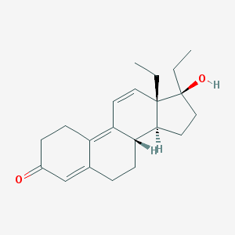

Tetrahydrogestrinone-
https://www.evolutionary.org/thg-tetrahydrogestrinone-the-clear
https://pubchem.ncbi.nlm.nih.gov/compound/6857686#section=MeSH-Tree
https://www.ncbi.nlm.nih.gov/pubmed/15174177
- Formation-THG was synthesized by hydrogenation of gestrinone, a steroid with many other steroid derivatives .
- STRUCTURE-C21H28O2

- Effects-It binds to the androgen receptor at the ligand binding pocket; turning on anabolic and androgenic functions. Tetrahydrogestrinone is potent because of its high affinity to the androgen receptor via stronger Van Der Waals forces. Amongst these anabolic and androgenic functions include, easier muscle gains and faster recoveries.
- Detection Traces of THG can be found in urine via liquid chromatography and gas spectroscopy. THG was one of the first designer steroids thus was designed to be undetectable earning the nickname “the Clear” only recently have such detection methods been started.